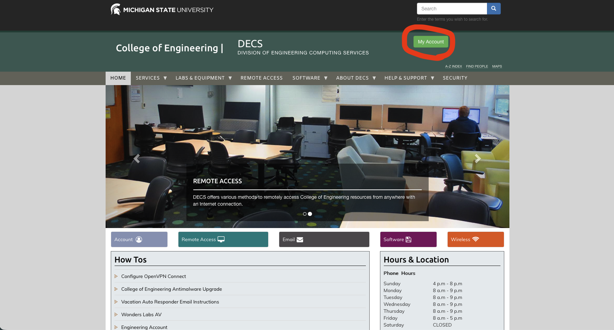
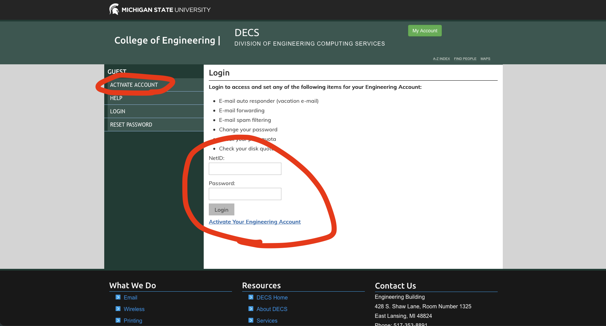
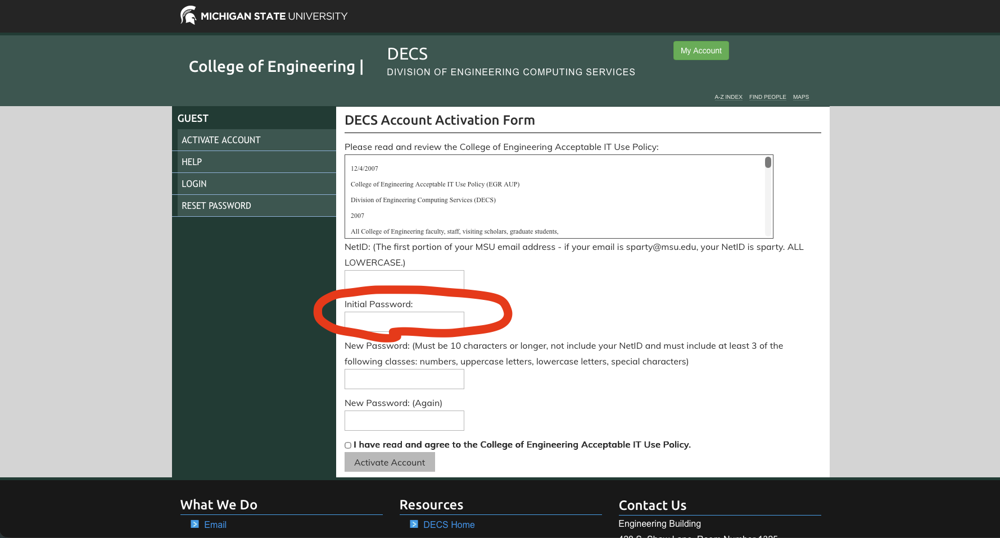
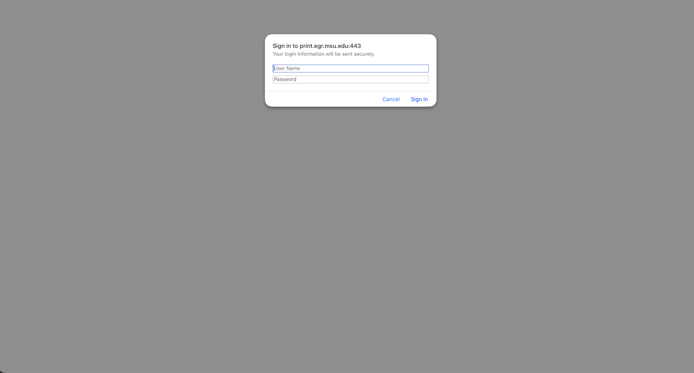
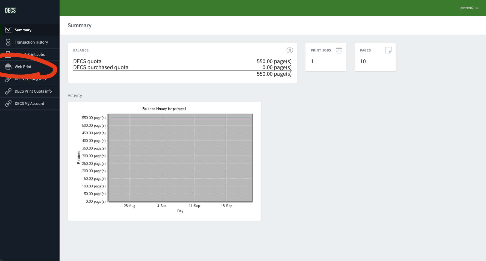
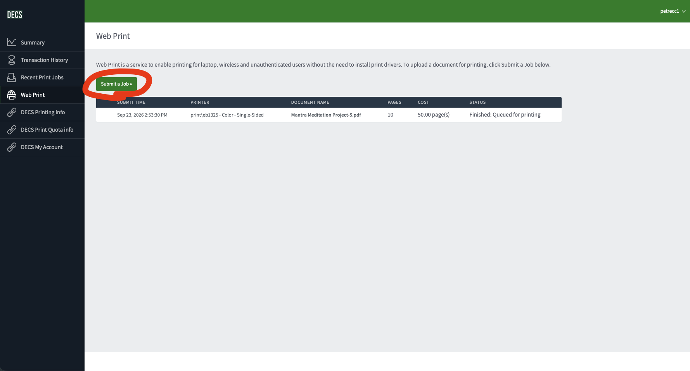
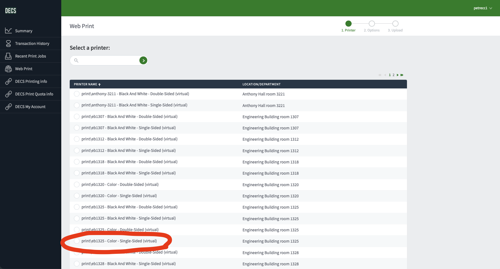
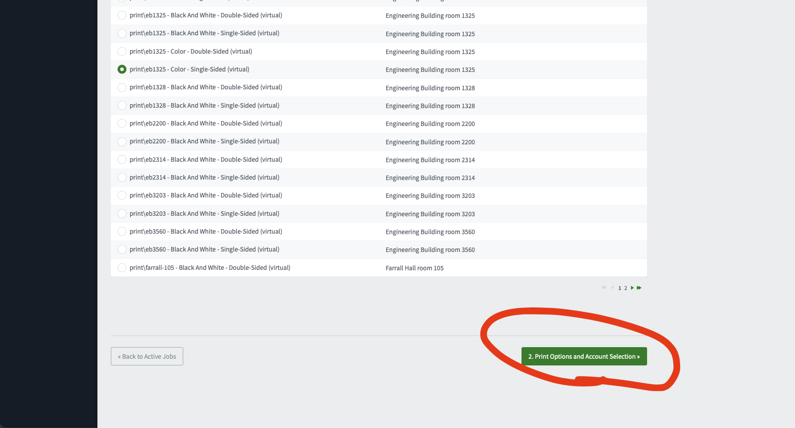
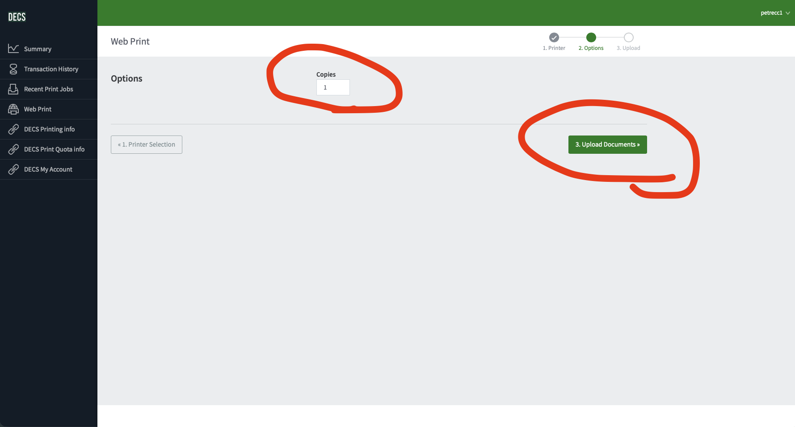
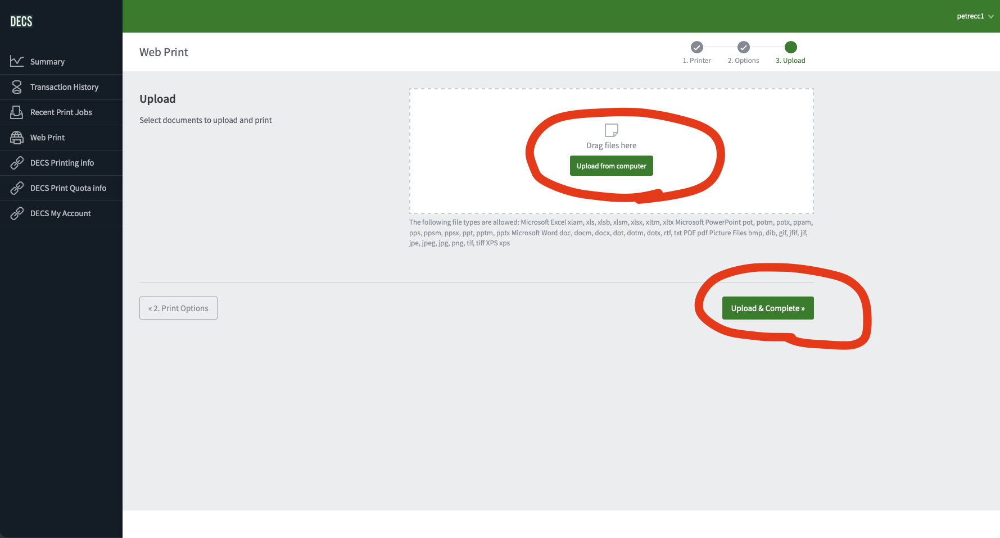

CMSE graduate space · practical guide
Printing instructions
Start with what you need to print, then follow the right path for the printer you can use.
Start here
What do you need to print?
Color printing
CMSE printers cannot print in color.
Use the College of Engineering DECS Web Print system instead.
Black & white printing
Where do you want to print?
CMSE graduate space
Which floor are you on?
Selected printer
First Floor
Open the printer’s web interface in Safari, Chrome, or Edge. The PDF notes that Brave is not supported.
Open First Floor printer loginhttp://35.9.131.150:8000/http://35.9.135.85:8000/01 / Send your file
Direct Print, step by step
- Open the login pageUse the floor selector above to open the correct printer interface.
- Log inYou can use the last five digits of the PIN on your MSU ID as your username with no password, or use the shared default credentials below.
- Choose “Direct Print”Direct Print supports PDF, PS/EPS, and image files.
- Review the job and printCheck the file, paper size, copies, and whether you want double-sided printing before submitting.
Default login: Username 7654321 · Password 1987
Preferred option: Use your individual MSU ID login when possible.
02 / Before you send
Useful settings
Increase the resolution when you need a sharper print.
Increase the number of copies or turn on double-sided printing.
Try “Enlarge Print Area” or “Enlarge/Reduce to Fit Paper Size” so the page fills the paper correctly.
03 / If the printer beeps
Troubleshooting
If you hear three or four loud beeps immediately after printing, the printer may be trying to draw paper from a location that is empty.
- Log in on the printer itself.
- Change the paper location by clicking the box in the bottom-left corner, then choose Letter.
- Alternatively, move paper to the smaller tray on the right side.
Engineering / DECS Web Print
Print through Engineering
CMSE graduate-space printers are black-and-white only. Use this workflow for color printing or to print through Engineering.

Step 1 - Open My Account. - 02
Try signing in first
Enter your NetID without
@msu.eduand your Engineering account password. Login works: skip activation. Login does not work: click Activate Your Engineering Account.
Step 2 - Check whether your account works. - 03
Activate your account if needed
Enter your NetID. For Initial Password, use the numeric PID printed beneath your name on your MSU ID card. Create and confirm a new Engineering password, accept the IT Use Policy, then activate.
If this form does not work, you may not yet have an Engineering account. Visit DECS in Engineering Building room 1325; account creation can take 24-48 hours.

Step 3 - Activate your Engineering account. - 04
Sign in to Engineering Web Print
Go to print.egr.msu.edu. In the browser sign-in box, use your NetID without
@msu.eduand Engineering password.
Step 4 - Sign in to Web Print. - 05
Open Web Print
On the PaperCut/DECS dashboard, click Web Print in the left sidebar.

Step 5 - Open Web Print. - 06
Start a new job
Click Submit a Job.

Step 6 - Submit a Job. - 07
Choose a color printer carefully
The list identifies printer location, color or black-and-white, and single- or double-sided output. Engineering Building room 1325 printers can be convenient when accessible; the example is
print\eb1325 - Color - Single-Sided (virtual). For another location, find its room and confirm the option says Color.
Step 7 - Choose a color printer. - 08
Continue to print options
Scroll to the bottom of the printer list and click Print Options and Account Selection.

Step 8 - Continue to print options. - 09
Choose copies
Enter the number under Copies, then click Upload Documents.

Step 9 - Set copies and upload. - 10
Upload and complete the job
Drag in your document or click Upload from computer. After selecting the file, click Upload & Complete.
Important: Selecting a file alone does not submit it. Click Upload & Complete or the job will not be submitted.
Your job should now appear in the Web Print queue. Then go to the physical printer you selected.

Step 10 - Upload and complete the job.
Source: CMSE Printing Instructions PDF. Printer addresses and steps should be rechecked if department hardware changes.